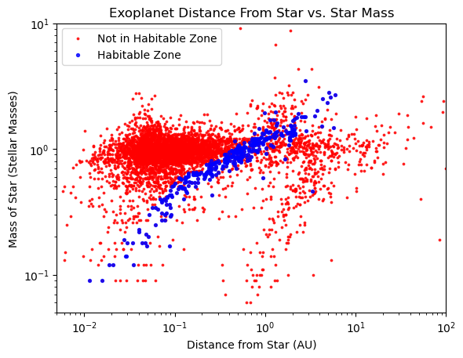

Exoplanet Analysis
One of the most popular topics in astronomy is the hunt for exoplanets and potential life on other planets. NASA currently has over 5,000 documented exoplanets and counting. A small percentage of those planets are in their star’s habitable zone, and an even smaller percentage of those are suitable for life. The TRAPPIST and several Kepler solar systems have been widely touted to have the potential for life. My project partner, Ani, and I wanted to design a system that could use the information NASA’s exoplanet database provides us to help us find which planets fit the criteria for life.
Habitable Zone - Part 1
The first step to determine if a planet is habitable is to figure out if a planet is in its star’s habitable zone. There are two processes that can be taken to determine if a planet is in the habitable zone. The first way is to simply use a star’s luminosity and put it against the orbital distance of the planet, as described by this website. Luckily, both of these features were provided by the NASA database. With this data, I made a formula that produces a number we can use to determine if it is in the habitable range. We had data in the form of the log of solar luminosities (L☉) and astronomical units (AU, the distance the earth is from the sun):
| ___ | |
| Converted Distance = r / √ | 10L |
There is no consensus as to what exactly is the habitable zone. I wanted to be generous, so I took the widest range I could find, which was 0.9 to 1.37. Essentially, these numbers represent mathematically converting the alien solar system units to our solar system’s units, and then determining the habitable zone. So, the habitable zone is 90% of the earth’s distance to the sun to 137% of our distance. Below, there is a Tableau visualization of this. Orange points represent the planets in this habitable zone.
Habitable Zone - Part 2
The second way to determine if a planet is in the habitable zone is to determine the surface temperature of the planet. We define habitable as the planet’s surface being able to have liquid water, so habitable is between 0-100°C. The first step in this process ended up being far more difficult than we thought. We used this Wikipedia page to help us with this. It ended up being a complex equation using the star’s radius, star’s temperature, and the planet's orbital radius (r) to determine the energy flux (F) in that part of space, which can then be converted to effective surface temperature (T). Effective temperature is held in this equation:
σT4 = F = L/(4πr2)
We ended up finding several dozen planets in the habitable zone. Here is the chart we created to show which planets are habitable based on the surface tempurature calculation. Generally, the mass of the star vs. the planet’s distance from the star has a correlation with whether the planet is in the habitable zone, so we created that plot. One caveat to this method is that planets can have an atmosphere, which can trap heat, changing its surface tempurature. It tends to lean towards labeling warmer planets habitable compared to the previous method.
Other Factors
There are other factors to consider when determining if a planet is suitable for life. One is the density of the planet, which would signify a gas planet or a rocky planet (>2.5 = rocky). The radius (0.5 to 2.5) and mass (0.3 to 10) of the planet is important. Too big or small affects the gravity of the planet. The last feature we checked was the eccentricity (<0.25) of the planet’s orbit. The more elongated an orbit, the more the temperature varies during the orbit, making conditions more hostile for life. I built a Tableau visualization that shows which planets are in the habitable zone (in orange), as well as meets the other habitability conditions. Circles represent meeting the basic criteria for life, and ‘+’ represents missing one attribute.
Tableau Visualization
I built a Tableau visualization that shows which planets are in the habitable zone (in orange), as well as meets the other habitability conditions. Circles represent meeting the basic criteria for life, and ‘+’ represents missing one attribute.